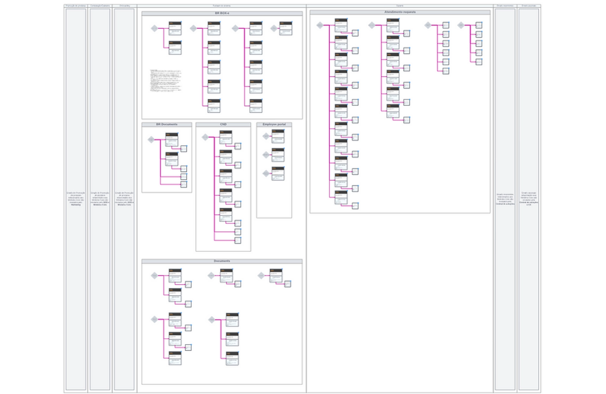
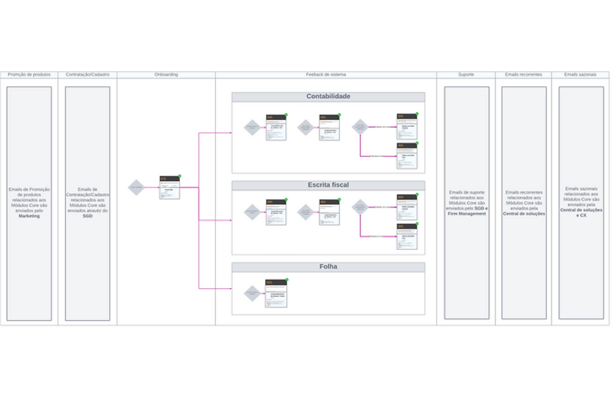
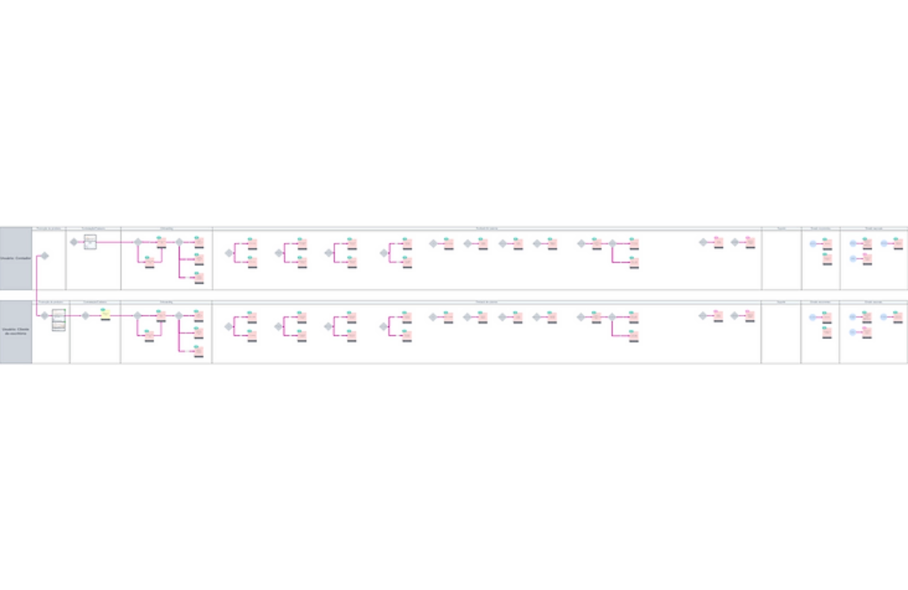
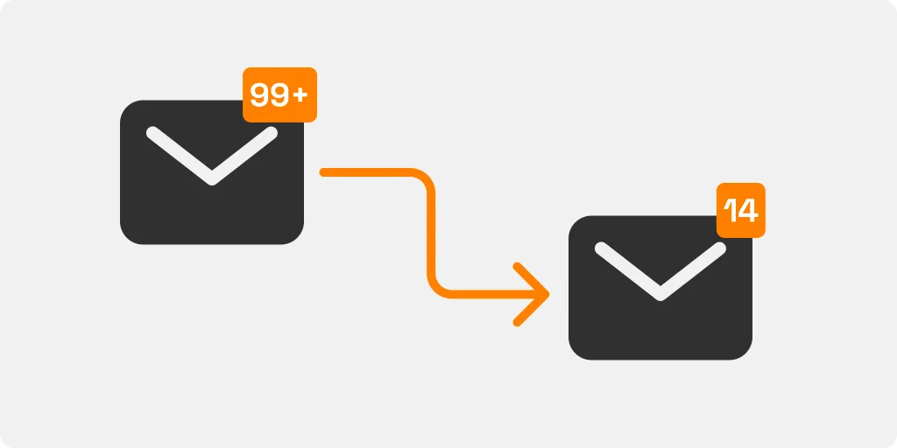
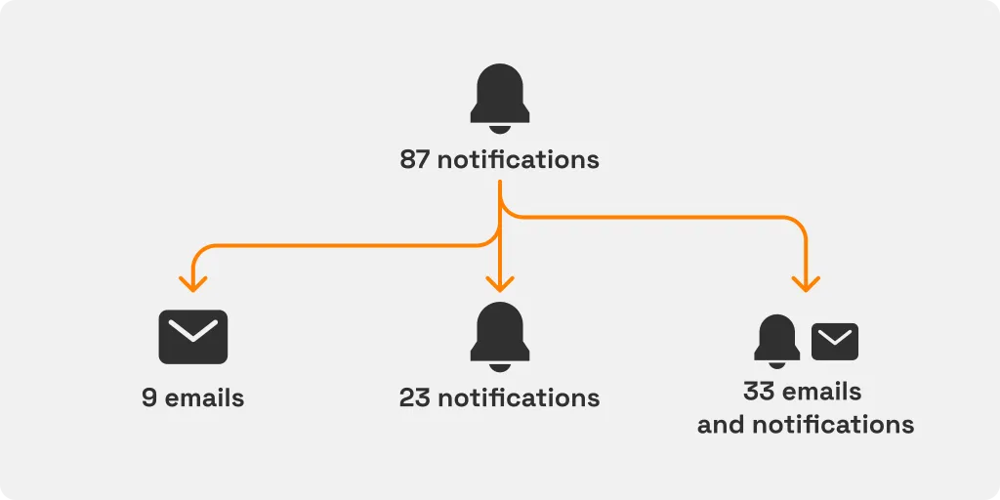

User Communication

Messaging
UX
Research
Project
As time went on, Thomson Reuters found itself sending more and more emails and notifications to users, but with no consistent style or clear strategy. This led to a mishmash of messages that varied widely in content and visual design, creating a fragmented user experience.
Goals
- The first objective was to create a more cohesive and unified look and feel for all emails and notifications, enhancing both the content and visual elements
- The second goal was to reduce the number of messages sent to users, streamlining their interactions with the platform
Stage 1: Getting to the Root of the Problem
Understanding the Current Landscape
We kicked off by diving deep into the existing state of communications. This meant talking to every team involved and compiling a comprehensive list of all emails sent out by the platform. By mapping out every message and sorting them by team and user flow stage, we gained valuable insights into the purpose and timing of each email.
Content Analysis
With a grand total of 87 distinct messages identified, we needed to figure out which ones truly mattered. So, we brought in stakeholders from every team to help us evaluate the relevance and urgency of each message, using the Eisenhower Matrix as our guide. This tool was invaluable for separating the "must-haves" from the "nice-to-haves."

Visual Design Audit
As we sorted through the messages, another issue quickly surfaced: visual inconsistency. Each team had its own style, and there was no unified visual language across the board. This fragmentation made the user experience feel disjointed.

Stage 2: Refining Content and Design
Streamlining Message Content
In this phase, we focused on decluttering. Using our findings from the Eisenhower Matrix, we identified messages that could be eliminated or merged. We then refined the remaining content, aligning it with the guidelines from our UX writing framework. Some messages only needed slight tweaks, while others were consolidated to deliver more value in fewer emails.



Revamping Email Templates
Next up, we tackled the visual side. Our goal was to establish a consistent design system for email templates. We created a set of standardized layouts, each designed for specific use cases, and made them available in Figma. This made it easy for any designer to craft new emails quickly while maintaining a cohesive visual style.

Results

Significant Reductions
The standout result? A massive reduction in the number of emails and notifications sent out. This streamlined approach significantly eased the burden on users who were previously overwhelmed by the volume of messages.

Key Metrics
The impact was clear: One team went from sending 87 notifications to just 12 emails. When we scaled this up to the platform's broader user base of 299 companies, it translated to roughly 349 fewer emails sent per month.
Final Considerations
Reflecting on this project, several key lessons stand out. We've successfully revamped Thomson Reuters' email and notification system, making communication more user-friendly, efficient, and adaptable.
User-Centric Design
Every step we took was guided by a focus on improving the user experience. By reducing the message volume and creating a consistent visual style, we made user interactions more intuitive and less overwhelming.
Performance Evaluation
Regular monitoring and analysis of user interactions post-redesign will be crucial. Assessing metrics such as engagement, conversion rates, and user feedback will guide ongoing enhancements.
Collaborative Approach
The success of this redesign underscores the importance of collaborative efforts. Future endeavors will benefit from cross-functional collaboration between design, development, and user experience teams.
Adaptive Design Thinking
Embracing an adaptive design thinking mindset allowed for flexibility in responding to user needs. Maintaining this approach will facilitate agile responses to evolving user preferences and technological advancements.
User-Centricity as a Priority
Upholding a commitment to user-centric design principles remains pivotal. The user's journey and experience will continue to drive decision-making, ensuring interfaces that resonate and delight users.